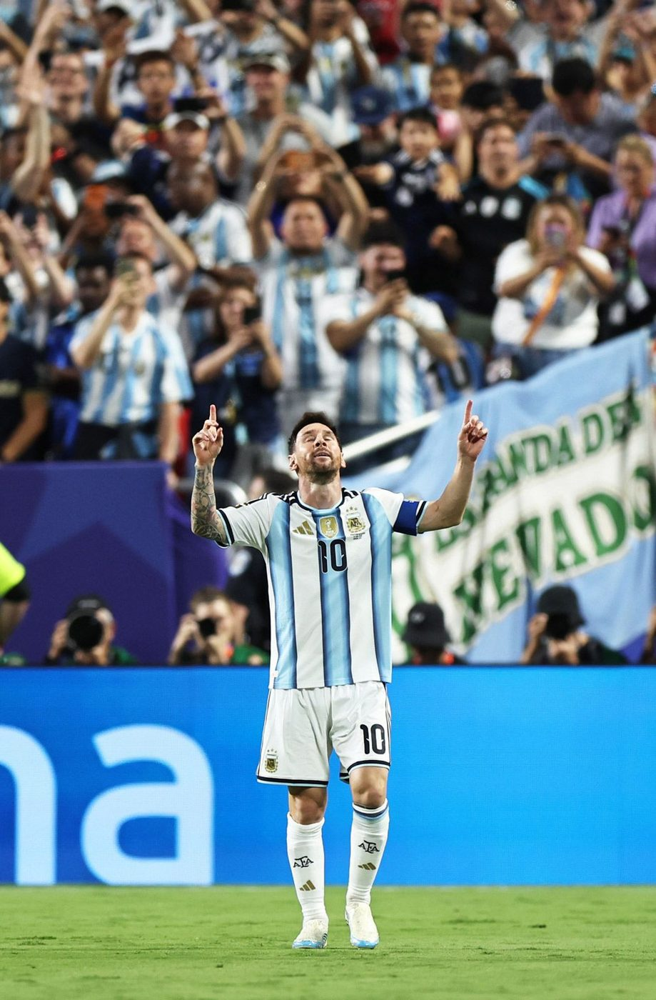
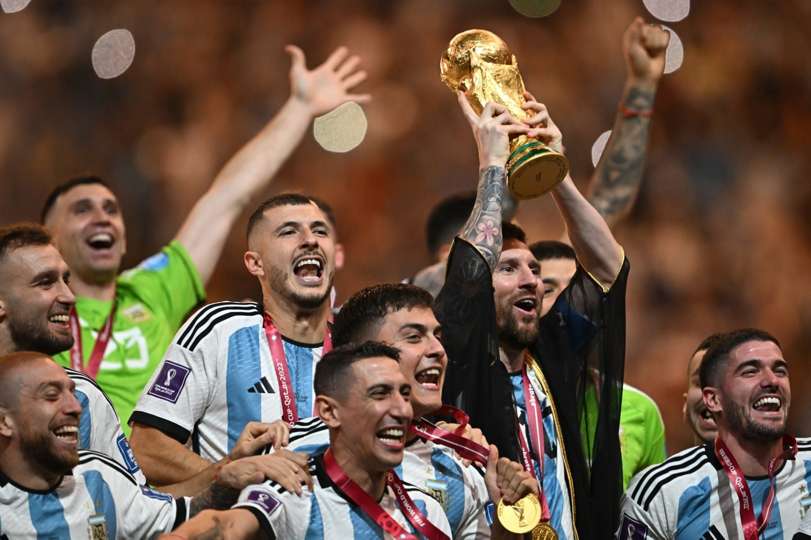
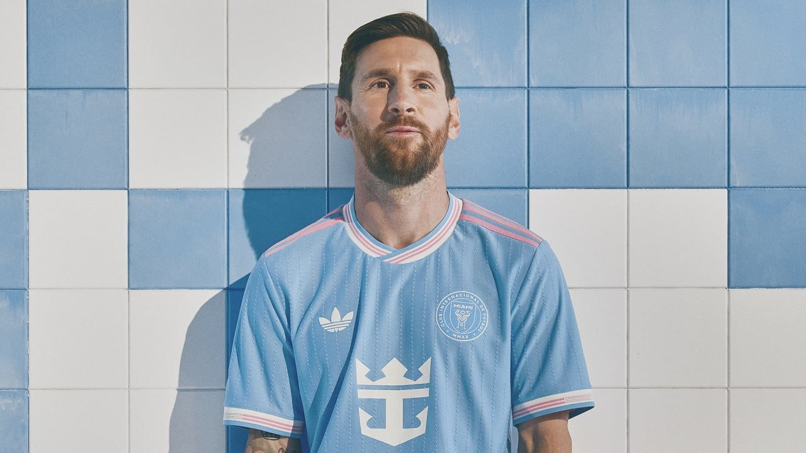

1987
Nasce em Rosário — Santa Fe, Argentina
Lionel Andrés Messi nasceu em 24 de junho de 1987. Antes dos 5 anos, já jogava no Grandoli, clube de bairro treinado pelo pai, Jorge.
02 — a jornada
Trinta anos de futebol resumidos na linha do tempo abaixo. Role e veja a história se desenrolar.
a linha do tempo
Cada marco que transformou um menino de Rosário no jogador mais premiado de todos os tempos.
1987
Lionel Andrés Messi nasceu em 24 de junho de 1987. Antes dos 5 anos, já jogava no Grandoli, clube de bairro treinado pelo pai, Jorge.
2000
Aos 13 anos, mudou-se para Barcelona com a família. O primeiro contrato foi assinado num guardanapo, após um teste em que impressionou os olheiros do Barça.
2004
Estreou no time principal do Barcelona em outubro de 2004, aos 17 anos. Em maio de 2005 veio o primeiro gol oficial, com assistência de Ronaldinho.

2009
O Barcelona de Guardiola conquistou todos os seis títulos possíveis em 2009 — incluindo a Champions League. Messi recebeu sua primeira Bola de Ouro e nunca mais parou.
2012
Entre janeiro e dezembro de 2012, marcou 91 gols por Barcelona e Argentina — recorde mundial de gols em um ano civil, superando Gerd Müller.
2014
Levou a Argentina à final da Copa do Mundo e foi eleito o melhor jogador do torneio. O título escapou por 1 a 0, na prorrogação, para a Alemanha.
2015
Com Suárez e Neymar, o Barcelona venceu Liga, Copa e Champions. Messi somou a quinta Bola de Ouro e o quarto título de Champions.
2021
Primeiro título oficial pela seleção principal: a Copa América de 2021, vencida no Maracanã contra a anfitriã Seleção Brasileira. No mesmo ano, lágrimas na despedida do Barcelona e recomeço no PSG — e a 7ª Bola de Ouro.
2022
A final mais dramática de todas as Copas: 3 a 3 com a França e vitória nos pênaltis. Messi marcou 7 gols, ganhou a Bola de Ouro do torneio e ergueu a taça vestindo o bisht real.

2023
Recusa saudosa à Arábia e ao retorno ao Barça: escolheu o Inter Miami e transformou o futebol americano. No fim do ano, a oitava Bola de Ouro — mais ninguém tem nem metade.

2024
A Argentina venceu a Copa América de 2024 e confirmou a dinastia: Messi soma agora duas Copas América, a Finalíssima de 2022 e a Copa do Mundo.
2025
Aos 38 anos, continua dando show no Inter Miami e pela Argentina. O menino de Rosário ainda não terminou de escrever a história.
continue